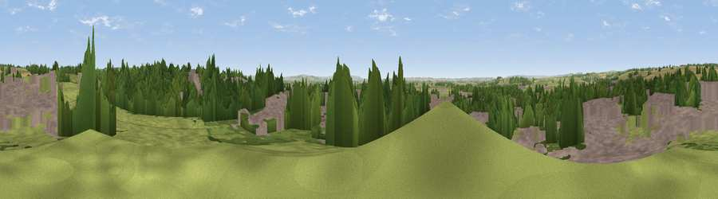

Beacon Hill
#26392 in England · top 56% of its area beats it · near PickeringThe view, rendered

A 360° render of this exact spot computed from the terrain model, tree cover and land cover — summer colours, afternoon light, calibrated against photographs of famous viewpoints. Real trees, hedges and buildings will differ in detail.
The panorama
Grey silhouette: terrain skyline in each direction (720 bearings, Earth curvature and refraction included). Dashed green: skyline with trees (+15 m) and buildings (+8 m) as obstacles. Blue strip: how far the ground is visible on each bearing.
Where the view opens
Wedge length = distance to the farthest visible ground on that bearing (vegetation-aware). Rings at 10, 25 and 50 km.
What fills the view
35% built-up · 29% grassland · 24% woodland · 12% cropland
Angular shares of the visible panorama (visual magnitude), not map area. Landscape diversity 0.58 (0–1 Shannon).
Key numbers
More beautiful places nearby
The staircase of upgrades: each row has a higher view potential than everything closer. Driving times are estimates from straight-line distance, calibrated against real road routing — check an actual route before setting out.
| Place | Direction | Drive | Score |
|---|---|---|---|
| Viewpoint near Sinnington | W · 4 km | ~9 min | 55.6 |
| Viewpoint near Marton | WSW · 4 km | ~9 min | 58.3 |
| Viewpoint near Thornton-le-Dale | E · 5 km | ~12 min | 60.4 |
| Viewpoint near Cropton | NNW · 6 km | ~13 min | 61.5 |
| Viewpoint near Allerston | E · 7 km | ~14 min | 61.8 |
| Ana Cross | NW · 11 km | ~22 min | 65.9 |
| Viewpoint near Scagglethorpe | SSE · 13 km | ~24 min | 70.2 |
| Viewpoint near Settrington | SSE · 14 km | ~26 min | 72.3 |
54.24951, -0.78462 · source: osm peak · position refined by local search. Computed location — check access rights before visiting.